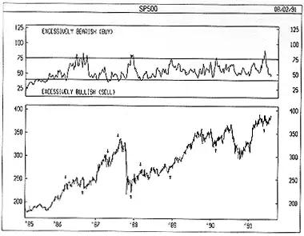

Developed by Martin Zweig, the Puts/Calls Ratio ("P/C Ratio") is a market sentiment indicator that shows the relationship between the number of Puts to Calls traded on the Chicago Board Options Exchange (CBOE).
Traditionally, options are traded by unsophisticated, impatient investors who are lured by the potential for huge profits with a small capital outlay. Interestingly, the actions of these investors provide excellent signals for market tops and bottoms.
A Call gives an investor the right to purchase 100 shares of stock at a pre-determined price. Investors who purchase Calls expect stock prices to rise in the coming months. Conversely, a Put gives an investor the right to sell 100 shares of stock at a pre-set price. Investors purchasing Puts expect stock prices to decline. (An exception to these general rules is that Puts and Calls can also be purchased to hedge other investments, even other options.)
Because investors who purchase Calls expect the market to rise and investors who purchase Puts expect the market to decline, the relationship between the number of Puts to Calls illustrates the bullish/bearish expectations of these traditionally ineffective investors.
The higher the level of the P/C Ratio, the more bearish these investors are on the market. Conversely, lower readings indicate high Call volume and thus bullish expectations.
The P/C Ratio is a contrarian indicator. When it reaches "excessive" levels, the market usually corrects by moving the opposite direction. The following table, general guidelines for interpreting the P/C Ratio. However, the market does not have to correct itself just because investors are excessive in their bullish/bearish beliefs! As with all technical analysis tools, you should use the P/C Ratio in conjunction with other market indicators.
| Table 12 | ||
| P/C Ratio 10-day Moving Average | P/C Ratio 4-week Moving Average | |
| Excessively Bearish (buy) | greater than 80 | greater than 70 |
| Excessively Bullish (sell) | less than 45 | less than 40 |
The following chart shows the S&P 500 and a 4-week moving average of the Puts/Calls Ratio.
 I drew "buy" arrows when investors were excessively pessimistic (greater than 70) and "sell" arrows when they were excessively optimistic (less than 40). The arrows certainly show that investors are buying Puts when they should be buying Calls, and vice versa.The Puts/Calls Ratio is calculated by dividing the volume of Puts by the volume of Calls.